Linux Terminal and Shell Concepts
How users interact with an operating system
The operating system (OS) is the main software that manages the computer’s hardware (CPU, memory, storage, keyboard, mouse, network and other devices) and provides services to applications. Users and apps don’t control that hardware directly; they go through an interface. There are two common kinds:
GUI · Graphical User Interface
How it works: you click icons, open windows and navigate menus with a mouse.
Why use it: intuitive and beginner-friendly. You explore visually without memorising anything.
CLI · Command-Line Interface
How it works: you type precise text commands into a terminal.
Why use it: much faster for complex tasks, precise, and easy to automate. Linux servers are built around CLI control to save resources.
The basic idea:
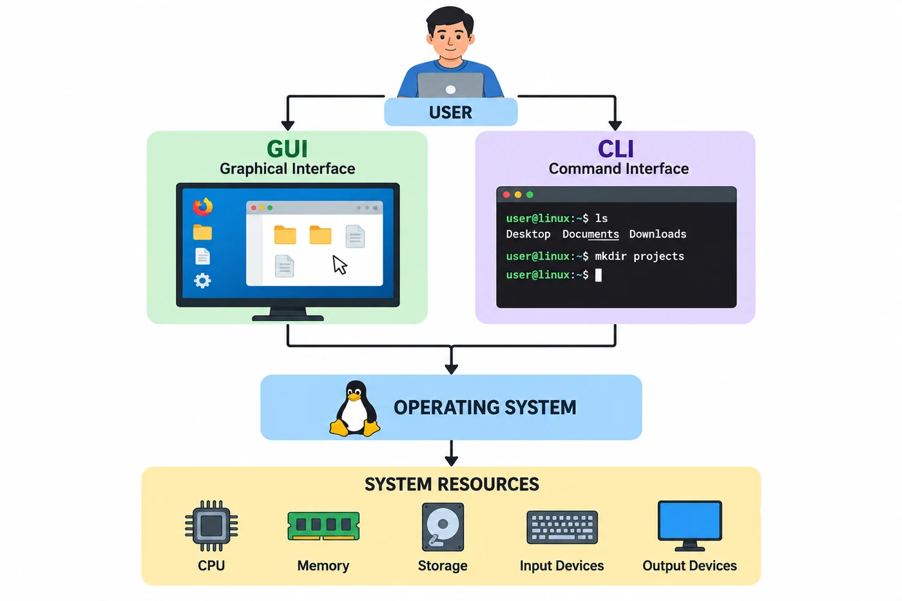
Why the command line exists
A GUI is perfect for browsing the web, but it has hard limits when you manage systems. The CLI is the standard for system administrators, DevOps engineers and cloud work for four reasons:
Speed in repetition
Clicking through the same 20 menus every day is slow. A typed command is instantly repeatable.
Remote access
A server in another country has no screen you can see. Sending text over the internet is fast and reliable; streaming a remote desktop can be slow or impossible.
Saves resources
Drawing windows and icons eats memory and CPU. Many servers have no GUI at all, so all the power goes to websites and databases.
Automation
Put commands in a text file (a script) and let it run unattended while you sleep. Automating mouse clicks is extremely hard.
The basic interaction model
Every action on a computer passes down the same chain:
| Link | Role |
|---|---|
| User | The person who wants to perform a task. |
| Interface | How instructions are sent. The terminal and shell are a text-based interface. |
| Operating system | The core software that receives the instruction and orchestrates how it is executed. |
| Resources | The hardware (CPU, memory, disks, devices) that actually does the work. |
What is a terminal?
A terminal is a text-based interface where you enter commands and see the results. Open one and you see a prompt where you can type something like ls. The terminal takes your keyboard input and displays whatever the command prints. Its job is input and output:
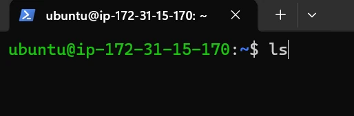
ls typed at the prompt, waiting for Enter.Input
Receives what you type on the keyboard.
Output
Displays the results on screen.
Errors
Shows error messages when something goes wrong.
Cursor
Shows where the next character will appear.
Types of Linux terminals
All of these let you work with text, but they work in different ways.
1 · GUI terminal (terminal emulator)
What: the ordinary terminal app on your desktop (GNOME Terminal, macOS Terminal, Konsole).
How: runs in a normal window; resize it, copy and paste, open tabs for different tasks.
Idea: the everyday way to use the CLI alongside your browser and other apps.
2 · Virtual console (TTY)
What: a pure-text, full-screen terminal built into Linux, separate from the desktop. TTY stands for teletypewriter, an old hardware term.
How: press Ctrl + Alt + F3 (F1–F6 on many systems) for a black screen with just text.
Idea: if the desktop freezes, switch to a TTY to fix things or reboot, no mouse needed.
3 · Pseudo-terminal (PTY)
What: a software-simulated terminal used behind the scenes.
How: a GUI terminal window or an SSH session has no physical keyboard wired to a screen, so software creates a PTY that makes the shell believe it is talking to a real terminal.
Idea: whenever an app simulates a terminal for a shell, it uses a PTY. No need for deeper details yet.
The shell: the program that understands you
The terminal gives you a place to type, but it has no idea what ls, cd or mkdir mean. The shell is the program that reads your command, interprets it and starts the right program.
A shell is a command interpreter, the bridge between you and the operating system. Its main job:
Terminal vs shell
| The terminal… | The shell… |
|---|---|
| Accepts your keyboard input | Reads the commands you type |
| Provides a text-based interface | Parses them into meaningful pieces |
| Displays output on the screen | Interprets shell syntax such as variables and wildcards |
| Manages the session (window or tab) | Finds the actual program to run, and starts it |
| Handles built-in features such as changing directories | |
| Displays the results of the command |
The complete relationship
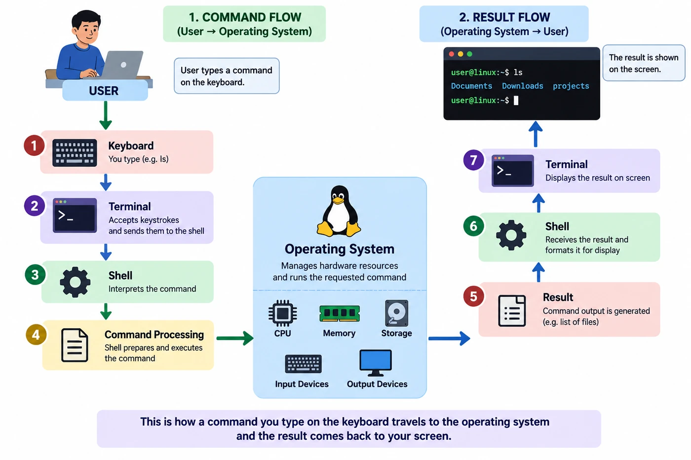
How a Linux command actually works
Knowing this journey makes everything later much less mysterious. Here is what happens when you type ls and press Enter:
- 1You enter a commandYou type
lsand press Enter. - 2The terminal receives the inputIt collects each character and passes the finished line to the shell running inside it.
- 3The shell reads the commandBash (our example shell) receives the text
ls. - 4The shell interprets itWhich command is it? Is it a built-in (handled inside Bash) or an external program on disk? What arguments or options were supplied along with it?
- 5The shell starts the program
lsis external, so Bash asks the OS to create a new process and run that program. - 6System callsTo do anything real (start a process, read a file, use memory) a program must ask the kernel through a system call, because ordinary programs may not perform privileged operations. You don’t write syscall code; just know every command relies on calls like “create a new process” or “open this file”. → shell → system call → kernel
- 7The kernel performs the requested operationOnly the kernel may control hardware and core resources, so it works with the file system, memory, devices and processes.
- 8The result comes backKernel → shell / process → terminal → you. The list of files appears on your screen.
Different Linux shells
Linux and UNIX have several shells. Each one reads your commands and runs them, but with different features and syntax.
To start any of them (if installed), type its name and press Enter. Then echo $0 prints the name of the shell you are now in, and exit takes you back.
1 · Bourne shell (sh)
Created by Stephen Bourne at AT&T Bell Labs in the late 1970s. The grandfather of modern Linux shells; it introduced many core concepts all modern shells still rely on.
Experience: extremely simple and lightweight, but old: you cannot press Up-arrow to recall previous commands, and there is no advanced auto-completion.
Why it still matters (portability): its biggest strength today is universal compatibility. Because sh exists on virtually every UNIX and Linux system in the world, developers often write automated scripts in sh to guarantee the script will run on any machine without modifications. (On Ubuntu, sh is actually dash, a small modern Bourne-compatible shell.)
Start it: sh
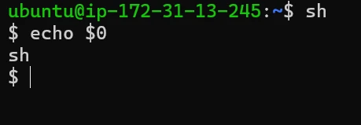
$; echo $0 says sh.2 · Bash (bash)
Developed by Brian Fox for the GNU Project: the “Bourne Again SHell”, built as a direct, feature-rich replacement for the older Bourne shell, maintaining strict compatibility while adding big quality-of-life improvements.
Key features: command history (↑/↓ to reuse previous commands), Tab completion (finishes long commands, file names and paths), aliases (your own short names for long, frequently used commands), and powerful scripting with variables and control structures.
Why it matters: the undisputed industry standard and the default shell on the vast majority of Linux distributions and servers.
Start it: bash
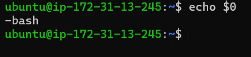
echo $0 prints -bash (the leading - marks a login shell).3 · Korn shell (ksh)
Developed by David Korn at Bell Labs to bridge usability and programming: a powerful environment for both interactive command-line use and advanced shell scripting.
Experience: it introduced features that significantly improved command-line productivity and expanded what was possible with automated shell scripts compared with earlier, simpler shells.
Why it matters (enterprise UNIX): it might not come pre-installed on your average desktop Linux, but it is a heavyweight in traditional large-scale enterprise environments, used extensively on corporate UNIX systems such as IBM AIX.
Start it: ksh
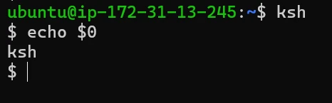
echo $0 confirms ksh.4 · C shell (csh)
Developed by Bill Joy at the University of California, Berkeley, with a specific audience in mind: programmers.
Experience: introduced useful interactive features such as command history early on. Its defining trait is a syntax heavily influenced by the C language; its scripting rules are quite different from Bourne-style shells (sh and Bash).
Why it matters (the programmer’s choice): because its language structure mirrored C, it became attractive and comfortable for developers and early UNIX users who were already used to writing C code.
Start it: csh
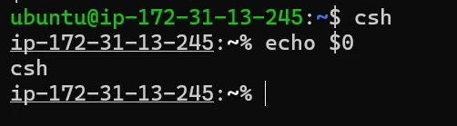
%; echo $0 says csh.5 · T shell (tcsh)
An enhanced, upgraded version of the original C shell (csh). It keeps the familiar C-like programming style and syntax while adding crucial quality-of-life improvements.
Key features: command-line editing (navigate and fix typos on the prompt before pressing Enter), command history (the ability to recall previously typed commands) and auto-completion (complete long commands and file names automatically).
Why it matters: the go-to choice on many UNIX systems for users who preferred C syntax but needed a more convenient, user-friendly experience.
Start it: tcsh
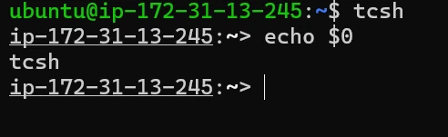
; echo $0 prints tcsh" width="492" height="151">>; echo $0 says tcsh.6 · Z shell (zsh)
A powerful, modern shell designed for both interactive daily use and advanced scripting.
Key features: it provides top-tier usability and deep customization, taking standard features and elevating them: powerful command, file name and path auto-completion; advanced command history management; programmable, highly visual prompts; and extensive support for external plugins and custom themes.
Why it matters (the modern favourite): hugely popular with developers and power users who want full control of their terminal. Frameworks like Oh My Zsh make it easy to configure and theme, and it has replaced Bash as the default login shell on modern macOS.
Start it: zsh
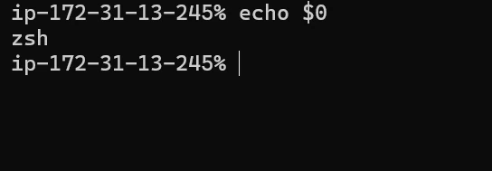
%; echo $0 says zsh.sh # Bourne-compatible shell
bash # Bourne Again Shell
ksh # Korn shell
csh # C shell
tcsh # T shell
zsh # Z shell
echo $0 # which shell am I in right now?
exit # leave it and return to the previous shellBash: starting and identifying your shell
Bash (“Bourne Again SHell”) plays two roles at once:
Interactive command interpreter
The shell you type commands into directly.
Scripting language
Save a sequence of commands in a file and run them together as a script.
It is everywhere in professional work: Linux administration (users, files, services), automation of repetitive tasks, DevOps build and deployment scripts, server management, and shell scripting (writing reusable, shareable command sequences).
Opening a terminal
When you launch a terminal (or log in over SSH), a shell session, usually Bash, starts automatically inside it.
Which shell is my default?
echo $SHELL/bin/bash$SHELL is an environment variable that usually holds your default login shell, a saved setting.
Which shell is running right now?
ps PID TTY TIME CMD
1234 pts/0 00:00:00 bash
1250 pts/0 00:00:00 psps shows the processes actually running in this terminal. The two can differ: if you start zsh by hand, $SHELL still says /bin/bash but ps shows zsh. Notice pts/0: that’s the pseudo-terminal your SSH session is using.
Starting and exiting nested shells
bash # start a new Bash inside the current one: one level deeper
exit # leave it (or press Ctrl+D) and return to the shell beforeexit closes only the innermost shell. Exiting the last one closes the terminal session.The command prompt, explained
Whenever you open a terminal on your EC2 server, you see a line like this:
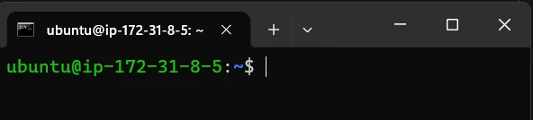
This line is called the command prompt. It isn’t decoration: it tells you who you are, where you are, and how much power you have before you run anything.
username: who is logged in.
hostname: which machine you’re on.
current directory: where you are (~ = home).
permission indicator: $ normal user, # root.
General structure of the prompt
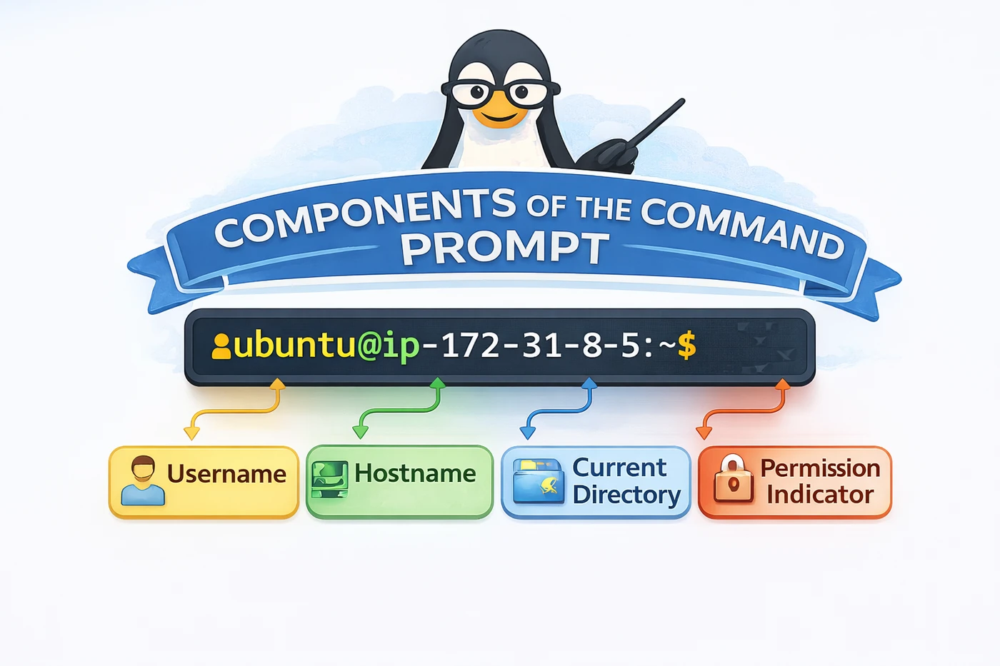
The standard format is username@hostname:current_directory$. Your actual prompt, ubuntu@ip-172-31-8-5:~$, can be divided into four components: username, hostname, current directory and permission indicator. Each part has a specific meaning.
1 · Username → ubuntu
You are logged in with the user account ubuntu. Linux is multi-user: many users can exist on one system, each with their own files, permissions and settings, and everything you do is tied to your account. On AWS EC2 Ubuntu servers, ubuntu is the default user created at launch.
whoami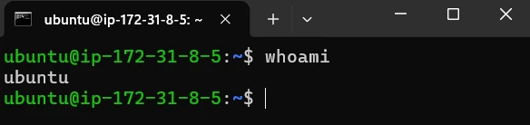
whoami confirms your identity: ubuntu.2 · Hostname → ip-172-31-8-5
The name of the computer you’re connected to. On an EC2 cloud server, AWS assigns it automatically, deriving it from the server’s private IP address, 172.31.8.5, which you can see in the EC2 console:
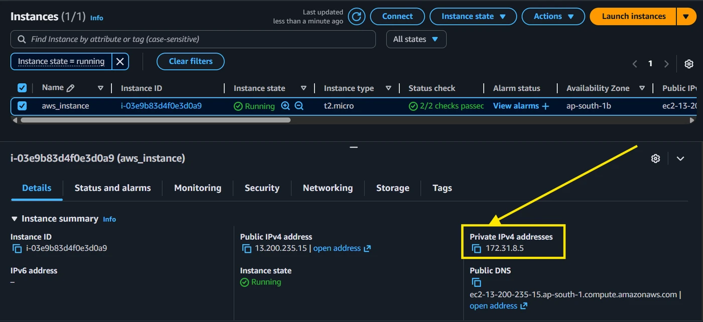
172.31.8.5.AWS converts the dots into dashes and adds the prefix ip-, resulting in ip-172-31-8-5. This hostname uniquely identifies your server inside the AWS network, which is very handy when you work with several servers: you always know exactly which one you are controlling.
hostname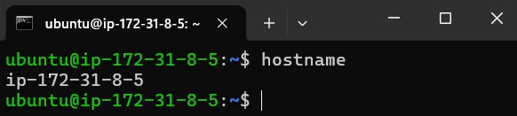
hostname prints ip-172-31-8-5.3 · Current directory → ~
~ is the shortcut for your home directory, your personal working area. For ubuntu that’s /home/ubuntu.
pwd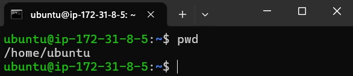
~ really is /home/ubuntu.If you move to another directory, the prompt changes accordingly:
cd /etc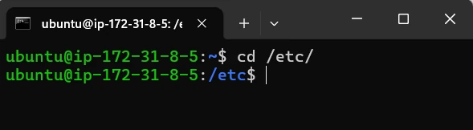
/etc instead of ~.This shows your current location is now /etc, so you always know your exact position in the file system.
4 · Permission indicator → $
$ means a normal user with limited permissions, which protects the system from accidental damage: you can’t change critical system files without special administrative privileges. Switch to the root user (for example with sudo -i) and the symbol becomes #:
sudo -i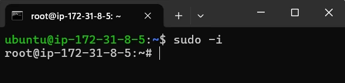
root and the $ becomes #.The # symbol means you are logged in as the root user, with full administrative control over the system.
Root has full control: it can change system files, install software, manage users and control the whole system.
#? Slow down. As root there is no safety net; one wrong rm can break the server. Type exit to return to your normal user as soon as the admin task is done.What the whole prompt means
| Part | Meaning | Check with |
|---|---|---|
ubuntu | You are logged in as user “ubuntu” | whoami |
ip-172-31-8-5 | You are on the server named “ip-172-31-8-5” | hostname |
~ | Your current directory is /home/ubuntu | pwd |
$ | You are a normal user with standard permissions | id |
ip-… hostname tells you you’re on an AWS EC2 instance in an AWS data centre, not your laptop. Such servers host websites, run applications, databases and backend services, and are great for learning administration. Every command you run affects that server.Why it matters: commands act on files based on your location and permissions. Glancing at the prompt (identity, system, location, power level) before pressing Enter prevents a lot of mistakes: understanding the prompt ensures safe and correct system usage.
Understanding command structure
Almost every Bash command has the same shape:
command [options] [arguments]command: the program or built-in to run.
option (or flag): changes how the command behaves; -l = long listing.
argument: the thing the command acts on.
File.txt and file.txt are two different files, and LS is not ls.Built-in vs external commands
Some commands live inside Bash itself and run instantly without starting a new program. Others are separate program files on disk that Bash launches as a new process.
Shell built-ins
Examples: cd, echo, pwd, export.
Handled inside Bash for speed, and because some (like cd) must change the shell’s own state, which only Bash can do. A separate program changing its directory wouldn’t move your shell.
External commands
Examples: ls, cat, cp, mv.
Separate executable files, typically in /bin or /usr/bin. Bash finds them and starts each as a new process.
Ask Bash how it will treat a name with type:
type cd
type cat
type lscd is a shell builtin
cat is /usr/bin/cat
ls is aliased to `ls --color=auto'On Ubuntu, ls is an alias (that’s why folders show in colour). Underneath it is still the external program; type -P ls prints its file: /usr/bin/ls.
/bin is just a link to /usr/bin, so /bin/ls and /usr/bin/ls are the same file.How Bash finds external commands: $PATH
When you type ls, Bash must know where that program lives. The answer is the environment variable PATH: a list of directories separated by colons (:). Bash searches them in order and runs the first match.
echo $PATH/usr/local/sbin:/usr/local/bin:/usr/sbin:/usr/bin:/sbin:/bin:/usr/games:/usr/local/games:/snap/bincommand not found.which and command -v
Both tell you what a PATH search would find:
which ls
command -v cat/usr/bin/ls
/usr/bin/catcommand -v is built into the shell and also reports aliases and built-ins (try command -v ls and command -v cd); which only searches PATH.
python: command not found” or “it runs the wrong Python” on a customer box is almost always a PATH problem. which python3 and echo $PATH are the first two commands to run.The Bash environment and variables
The environment is the set of information (variables and settings) available to programs launched from the shell: your home directory, your username, where to look for commands, and so on.
Shell variables
Create your own variable, then read it back with a $:
name="John"
echo $nameJohnname = "John" fails: Bash thinks name is a command. Write name="John". This is the most common beginner mistake.Environment variables
| Variable | Holds | Example value |
|---|---|---|
PATH | Where Bash looks for commands | /usr/local/bin:/usr/bin:… |
HOME | Your home directory | /home/ubuntu |
SHELL | Your default shell | /bin/bash |
USER | Your username | ubuntu |
Viewing all environment variables
env
printenvSHELL=/bin/bash
PWD=/home/ubuntu
HOME=/home/ubuntu
USER=ubuntu
PATH=/usr/local/sbin:/usr/local/bin:/usr/sbin:/usr/bin:/sbin:/bin:/snap/bin
...Both print the full list of environment variables currently set (yours will be longer).
Key terms
- CLI
- Command-Line Interface: working with a computer by typing text commands instead of clicking.
- GUI
- Graphical User Interface: working with a computer through windows, icons and menus with a mouse.
- Terminal
- A text interface that takes your keyboard input and displays output and errors; it does not interpret commands itself.
- TTY (virtual console)
- A full-screen text console built into Linux, reached with keys like Ctrl+Alt+F3, independent of the graphical desktop.
- PTY (pseudo-terminal)
- A software-simulated terminal that GUI terminal windows and SSH sessions use so the shell behaves as if it had a real terminal.
- Shell
- A command interpreter program that reads, interprets and runs your commands, then shows the result; the bridge between you and the OS.
- Bash
- The “Bourne Again SHell” from the GNU Project; the default shell on most Linux systems and a scripting language.
- Command prompt
- The line such as
ubuntu@ip-172-31-8-5:~$showing username, hostname, current directory and permission level. - Root user
- The all-powerful administrator account; its prompt ends with
#instead of$. - Option (flag)
- A modifier such as
-lthat changes how a command behaves. - Argument
- The thing a command acts on, such as a file or directory path.
- Built-in command
- A command executed inside the shell itself without starting a new program, such as
cdorecho. - External command
- A separate program file on disk, such as
/usr/bin/ls, that the shell starts as a new process. - PATH
- An environment variable listing colon-separated directories the shell searches, in order, to find external commands.
- Environment variable
- A named value (e.g.
HOME,USER,PATH) passed to programs started from the shell; view them withenvorprintenv.
Self-check
Pick an answer. You’ll see right away whether it’s correct and why.
Which part actually understands what mkdir means?
- The terminal
- The keyboard driver
- The shell
- The monitor
The terminal only carries text in and out. The shell interprets the command and starts the right program.
Your desktop freezes. What lets you fix things without the GUI?
- Switching to a virtual console (TTY) with Ctrl+Alt+F3
- Opening another GUI terminal tab
- Starting zsh
- Running
echo $SHELL
TTYs are text consoles built into Linux, independent of the graphical desktop.
Your prompt reads root@web-01:/var/log#. What is true?
- You are user web-01 in your home directory
- You are a normal user in /var/log
- You are root in your home directory
- You are root, on host web-01, in /var/log
username@hostname:directory, and # means root.
Why must cd be a shell built-in?
- It is too small to be a file
- It has to change the shell’s own current directory
- External programs can’t use the disk
- Built-ins are always newer
A separate process changing its own directory wouldn’t move your shell. Only Bash can change its own state.
You type myscript and get command not found, but the file exists in ~/tools. Most likely reason?
- The terminal is broken
- Bash is case-insensitive
~/toolsis not in PATH- You need a TTY
Bash only searches the directories listed in PATH for external commands.
In ls -l /home, what is /home?
- An argument
- An option
- The command
- An environment variable
The argument is the thing the command acts on; -l is the option.
Which line correctly creates a variable in Bash?
name = "John"$name="John"set name "John"name="John"
No spaces around = and no $ when assigning; use $name only to read it.
echo $SHELL says /bin/bash, but ps shows zsh. Why?
- ps is wrong
- $SHELL is your default login shell; you started zsh by hand
- Bash and zsh are the same program
- The PATH is empty
$SHELL is a saved setting; ps shows what is really running now.
Which shell is the default on most Linux servers?
- csh
- ksh
- bash
- tcsh
Bash is the industry standard and default on most distributions; zsh is the default on modern macOS.
All of it, in one sentence
The terminal carries your text in and out, the shell (usually Bash) reads and interprets it, finds the program through PATH or runs a built-in, and asks the kernel to do the work, while the prompt constantly tells you who you are, where you are and how much power you have.
— Vishwa Mohan